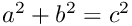

Hello World! Today I am learning LaTeX. LaTeX is a great program for writing math. I can write in line math such as  . I can also give equations their own space:
If I do not leave any blank lines LaTeX will continue this text without making it into a new paragraph. Notice how there was no indentation in the text after equation (1).
Also notice how even though I hit enter after that sentence and here
LaTeX formats the sentence without any break. Also look how it doesn’t matter how many spaces I put between my words.